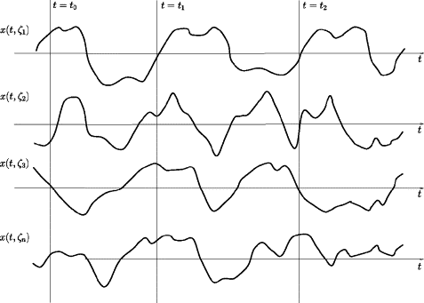
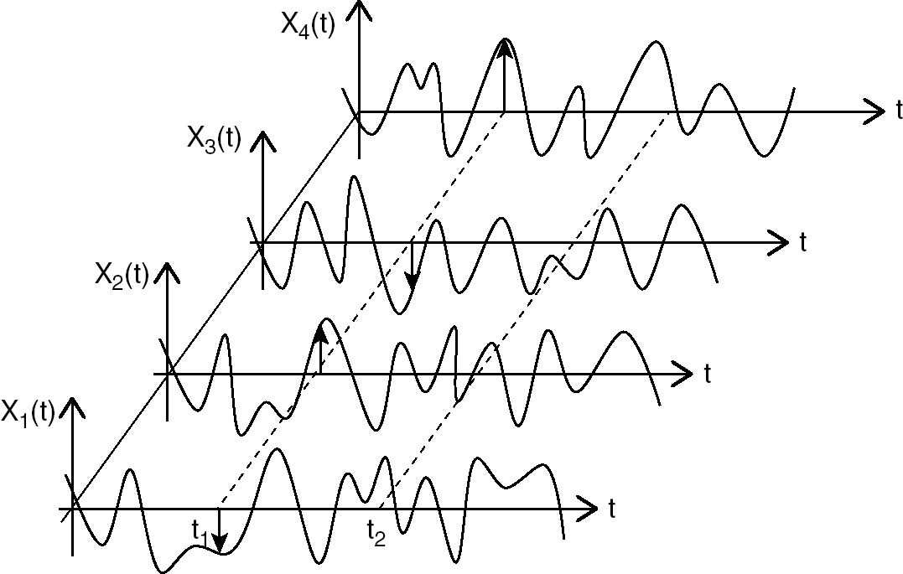
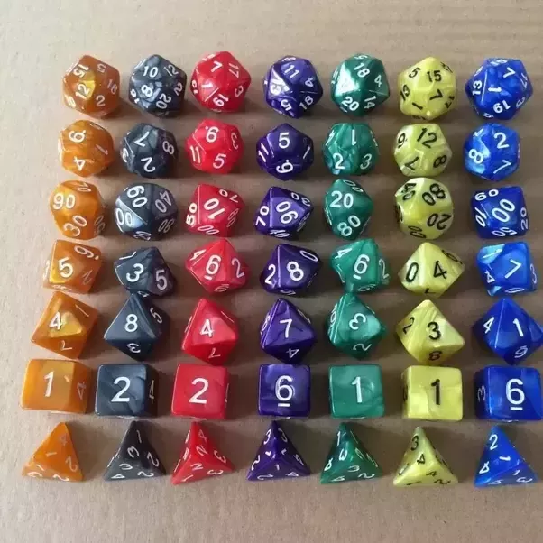
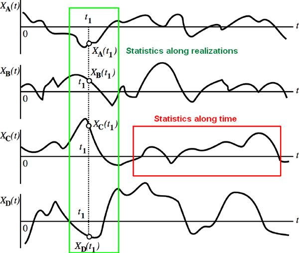

2 Procese aleatoare
2.1 Definiție
Un proces aleator reprezintă modelul matematic pentru ideea de “semnal aleator”, sau “zgomot”.
Un proces aleator este o secvență de variabile aleatoare indexate (înșiruite) în timp.
Proces aleator în timp discret \(f[n]\) este format din variabile aleatoare la momente de timp discrete de ex. o secvență de 50 aruncări de zar, sau cotația zilnică a unor acțiuni la bursă.
Proces aleator în timp continuu \(f(t)\) conține câte o variabilă aleatoate la orice moment de timp \(t\), cum ar fi un semnal tip zgomot de tensiune.
Fiecare eșantion dintr-un proces aleator \(f\) este o variabilă aleatoare de sine stătătoare, diferită de celelalte. Așadar, \(f(t_0)\), valoarea la momentul \(t_0\), este o variabilă aleatoare, la fel și \(f(t_1)\) etc.
O realizare a unui proces aleator reprezintă o secvență particulară de realizări ale v.a. componente.
De exemplu, când obsservăm un anume semnal de zgomot pe un osciloscop, vedem o anume realizare a procesului aleator. Am fi putut obține orice altă realizare, la fel de “haotică”, dar cu alte valori particulare.
Pentru a indica o anume realizare, folosim indicele \((k)\), de ex. \(f^{(k)}[n]\) sau \(f^{(k)}(t)\).
Când ne referim la un proces aleator, luăm în calcul întregul set de realizări posibile, chiar dacă vedem o singură realizare, cea care s-a întâmplat să fie.
La fel se întâmplă și la variabile aleatoare: când aruncăm un zar, vedem o realizare particulară, să zicem valoarea \(5\), dar știm că am fi putut obține oricare altă valoare și luăm în calcul întreg setul de valori posibile.
Ca interpretare grafică, este util sa vizualizăm un proces aleator în două dimensiuni, corespunzător celor două axe:
- axa timpului (\(t\) sau \(n\))
- axa realizărilor, care enumeră diferite realizări posibile \(f^{(k)}[n]\) sau \(f^{(k)}(t)\)

- sursa: “Information-Based Inversion and Processing with Applications” Edited by Tadeusz J. Ulrych, Mauricio D. Sacchi, Volume 36,

- sursa: Razdolsky, L. (2014). Random Processes. In Probability-Based Structural Fire Load (pp. 89-136). Cambridge: Cambridge University Press

- sursa: https://www.quora.com/What-is-the-difference-between-a-stationary-ergodic-and-a-stationary-non-ergodic-process
2.2 Distribuții ale proceselor aleatoare
Eșantioanele unui proces aleator sunt variabile aleatoare, care pot depinde sau nu unele de altele, în diverse moduri.
De aceea, pentru a descrie un proces aleator, folosim diferite tipuri de distribuții:
- distribuții de ordin 1, care descriu statistica fiecărui eșantion
- distribuții de ordin 2, care descriu statistica fiecărei perechi de eșantioane
- …
- distribuții de ordin N, care descriu statistica fiecărui grup de N eșantioane
- etc.
2.2.1 Distribuții de ordin 1
Fiecare eșantion \(f(t_1)\) dintr-un proces aleator este o variabilă aleatoare, având o distribuție de ordin 1 caracteriată de:
- o funcție de repartiție \[F_1(x;t_1) = P\lbrace f(t_1) \leq x\rbrace\]
- o densitate de probabilitate \[w_1(x;t_1) = \frac{dF_1(x;t_1)}{dx}\]
Aceste funcții depinde de momentul \(t_1\) considerat. Un eșantion la alt moment \(t_2\) este o v.a. diferită, cu statistică posibil diferită:
- o altă funcție de repartiție \(F_1(x;t_2)\)
- o altă densitate de probabilitate \(w_2(x;t_2) = \frac{dF_1(x;t_2)}{dx}\)
Aceste funcții descriu distribuția valorilor câte unui singur eșantion, sunt funcții matematice de o singură variabilă, lucru marcat și prin indicele \(w_1\).
2.2.2 Distribuții de ordin 2
O pereche de v.a. \(f(t_1)\) și \(f(t_2)\) formează un sistem de 2 v.a., care e descris de o distribuție de ordin 2:
- exista o funcție de repartiție comună \[F_2(x_i, x_j; t_1, t_2)\]
- există densitatea de probabilitate comună \[w_2(x_i, x_j; t_1, t_2) = \frac{\partial^2 F_2(x_i, x_j;t_1, t_2)}{\partial x_i \partial x_j}\]
Acestea sunt funcții de două varabile, descriu cum variază perechea de eșantioane de la momentele \(t_1\) și \(t_2\).
2.2.3 Distribuții de ordin N
Conceptele se pot generaliza pentrub orice \(N\).
Un set de \(N\) v.a. \(f(t_1), ...f(t_N)\) dintr-un proces aleator \(f(t)\) sunt descrise de o distribuție de ordin N, având:
- o funcție de repartiție comună \[F_N(x_1,... x_N; t_1,... t_N)\]
- o densitate de probabilitate comună \[w_n(x_1,... x_N; t_1,... t_N) = \frac{\partial^2 F_n(x_1,... x_N;t_1,... t_N)}{\partial x_1 ... \partial x_N}\]
Aceste funcțiisunt funcții de câte N variabile, și descriu cum sunt distribuite valorile seturilor de \(N\) eșantioane de la momentele \(t_1\), \(t_2\), … \(t_N\).
2.3 Medii statistice
La procese aleatoare se pot defini două tipuri de valori medii:
Valori medii statistice sunt cele calculate la un timp fixat \(t\), de-a lungul axei realizărilor, considerând toate realizărilor posibile care s-ar fi putut întâmpla la acel moment \(t\).
Valori medii temporale sunt cele calculate pentru o realizare \(k\) fixată, de-a lungul axei timpului.

- sursa: https://www.quora.com/What-is-the-difference-between-a-stationary-ergodic-and-a-stationary-non-ergodic-process
Mediile statistice sunt de obicei cele de dorit, dar ele necesită cunoașterea distribuțiilor \(w(x)\), care în practică sunt rareori cunoscute.
În practică, de obicei avem acces doar la o singură realizare, obținută printr-o măsurătoare, deci putem calcula doar mediile temporale pe acea realizare
Din fericire, în multe cazuri mediile statistice și temporale sunt identice, proprietate care poartă numele de “ergodicitate”.
2.3.1 Medii statistice de ordinul 1
Mediile statistice se calculează pe baza distribuțiilor de ordin 1, 2, … N, corespunzătoare momentelor considerate.
Mediile de ordin 1 se referă la un singur moment de timp fixat (\(t_1\)), luând în calcul toate realizările posibile. Ele caracterizează doar eșantionul de la momentul \(t_1\). La alt moment de timp \(t_2\), v.a. \(f(t_2)\) este diferită, și valorile medii pot diferi.
Pentru procese continue:
Valoarea medie \[\overline{f(t_1)} = \mu(t_1) = \int_{-\infty}^{\infty} x \cdot w_1(x; t_1) dx\]
Valoarea pătratică medie \[\overline{f^2(t_1)} = \int_{-\infty}^{\infty} x^2 \cdot w_1(x; t_1) dx\]
Varianța \[\sigma^2(t_1) = \overline{\left\{ f(t_1) - \mu(t_1) \right\}^2} = \int_{-\infty}^{\infty} (x-\mu(t_1)^2 \cdot w_1(x; t_1) dx\]
Cele trei mărimi satisfac relația:
\[\begin{split} \sigma^2(t_1) =& \overline{\left\{ f(t_1) - \mu(t_1) \right\}^2} \\ =& \overline{f(t_1)^2 - 2f(t_1)\mu(t_1) + \mu(t_1)^2} \\ =& \overline{f^2(t_1)} - \mu(t_1)^2 \end{split}\]
2.3.2 Autocorelația
Autocorelația este o medie statistică de ordinul 2, care caracterizează o pereche de eșantioane de la momentele \(t_1\) și \(t_2\):
- Autocorelația \[R_{ff}(t_1,t_2) = \overline{f(t_1) f(t_2)} = \int_{-\infty}^\infty \int_{-\infty}^\infty x_1 x_2 w_2(x_1, x_2; t_1, t_2) dx_1 dx_2\]
Definiția de poate extinde și pentru două procese aleatoare diferite, \(f(t)\) și \(g(t)\):
- Corelația \[R_{fg}(t_1,t_2) = \overline{f(t_1) g(t_2)} = \int_{-\infty}^\infty \int_{-\infty}^\infty x_1 y_2 w_2(x_1, y_2; t_1, t_2) dx_1 dy_2\]
2.3.3 Procese aleatoare discrete
Pentru procese aleatoare discrete, se înlocuiește \(\int\) cu \(\sum\), și notația \(f(t)\) cu \(f[t]\):
\(\overline{f[t_1]} = \mu(t_1) = \sum_{x=-\infty}^{\infty} x \cdot w_1(x; t_1)\)
\(\overline{f^2[t_1]} = \sum_{x=-\infty}^{\infty} x^2 \cdot w_1(x; t_1)\)
\(\sigma^2(t_1) = \overline{\left\{ f[t_1] - \mu(t_1) \right\}^2} = \sum_{x=-\infty}^{\infty} (x-\mu(t_1)^2 \cdot w_1(x; t_1)\)
\(R_{ff}(t_1,t_2) = \overline{f[t_1] f[t_2]} = \sum_{x_1=-\infty}^\infty \sum_{x_2=-\infty}^\infty x_1 x_2 w_2(x_1, x_2; t_1, t_2)\)
\(R_{fg}(t_1,t_2) = \overline{f[t_1] g[t_2]} = \sum_{x_1=-\infty}^\infty \sum_{x_2=-\infty}^\infty x_1 y_2 w_2(x_1, y_2; t_1, t_2)\)
2.4 Medii temporale
Mediile temporale se calculează pentru o singură realizare \(f^{(k)(t)}\), de-a lungul timpului.
Acesta este cazul uzual în practică, atunci când prin masurare avem acces la o singură realizare.
Aceste medii nu mai depind de timpul \(t\), întrucât de-a lungul timpului are loc medierea. În schimb, ele caracterizează o singură realizare \((k)\).
Medii temporale pentru procese aleatoare continue:
Valoarea medie temporală \[\overline{f^{(k)}(t)} = \mu^{(k)} = \lim_{T \to \infty} \frac{1}{T} \int_{T/2}^{T/2} f^{(k)}(t) dt\]
Valoarea medie pătratică temporală \[\overline{[f^{(k)}(t)]^2} = \lim_{T \to \infty} \frac{1}{T} \int_{-T/2}^{T/2} [f^{(k)}(t)]^2 dt\]
Varianța temporală \[\sigma^2 = \overline{\left\{ f^{(k)}(t) - \mu^{(k)} \right\}^2} = \lim_{T \to \infty} \frac{1}{T} \int_{-T/2}^{T/2} (f^{(k)}(t)-\mu^{(k)})^2 dt\]
Relația dintre cele trei mărimi: \[\sigma^2 = \overline{[f^{(k)}(t)]^2} - [\mu^{(k)}]^2\]
Autocoreația temporală \[\begin{split} R_{ff}(t_1,t_2) =& \overline{f^{(k)}(t_1 + t) f^{(k)}(t_2+t)} \\ =& \lim_{T \to \infty} \frac{1}{T} \int_{-T/2}^{T/2} f^{(k)}(t_1+t) f^{(k)}(t_2 + t) dt \end{split}\]
Corelația temporală (pentru două procese diferite \(f(t)\) și \(g(t)\)) \[\begin{split} R_{fg}(t_1,t_2) =& \overline{f^{(k)}(t_1 + t) g^{(k)}(t_2+t)}\\ =& \lim_{T \to \infty} \frac{1}{T} \int_{-T/2}^{T/2} f^{(k)}(t_1+t) g^{(k)}(t_2 + t) dt \end{split}\]
2.4.1 Procese aleatoare discrete
Pentru procese aleatoare discrete, se înlocuiește \(\int\) cu \(\sum\), \(T\) cu \(N\), și se împarte la \(2N+1\) în loc de \(2T\).
\(\overline{f^{(k)}[t]} = \mu^{(k)} = \lim_{N \to \infty} \frac{1}{2N+1} \sum_{t=-N}^{N} f^{(k)}[t]\)
\(\overline{[f^{(k)}[t]]^2} = \lim_{N \to \infty} \frac{1}{2N+1} \sum_{t=-N}^{N} (f^{(k)}[t])^2\)
\(\sigma^2 = \overline{\left\{ f^{(k)}[t] - \mu^{[k]} \right\}^2} = \lim_{N \to \infty} \frac{1}{2N+1} \sum_{t=-N}^{N} (f^{(k)}[t]-\mu^{(k)})^2\)
Autocorelația temporală:
\[\begin{split} R_{ff}(t_1,t_2) =& \overline{f^{(k)}[t_1 + t] f^{(k)}[t_2+t]} \\ =& \lim_{N \to \infty} \frac{1}{2N+1} \sum_{t=-N}^{N} f^{(k)}[t_1+t] f^{(k)}[t_2 + t] \end{split}\]
Corelația temporală:
\[\begin{split} R_{fg}(t_1,t_2) =& \overline{f^{(k)}[t_1 + t] g^{(k)}[t_2+t]}\\ =& \lim_{N \to \infty} \frac{1}{2N+1} \sum_{t=-N}^{N} f^{(k)}[t_1+t] g^{(k)}[t_2 + t] \end{split}\]
2.4.2 Realizări de lungime finită
În practică, de obicei avem o realizare de lungime finită, de exemplu un vector cu 1000 de eșantioane.
În acest caz, mediile temporale se calculează doar asupra datelor avute la dispoziție, de la \(\int_{t_{min}}^{t_{max}}\) sau \(\sum_{t_{min}}^{t_{max}}\) în loc de la \(-\infty\) la \(\infty\)
2.5 Staționaritate
Până acum am considerat că mediile statistice depind de timp, adică pot fi diferite pentru la momentul \(t_1\) față de momentul \(t_2\). În practică, pentru multe fenomene valorile mediilor sunt egale între ele, ceea ce simplifică analiza.
Un proces aleator este staționar dacă mediile statistice rămân aceleași la modificarea originii timpului (întârzierea semnalului). Altfel spus, distribuțiile eșantioanelor rămân identice la modificarea originii timpului cu un \(\tau\) oarecare:
\[w_N(x_1,...x_N; t_1,...t_N) = w_N(x_1,...x_N; t_1+\tau,... t_N + \tau)\]
Acest lucru înseamnă că toate mediile statistice nu mai depind explicit de timpul \(t\).
Un proces aleator este staționar în sens strict dacă relația e valabilă pentru distribuțiile de orice ordin \(N\), ceea ce face ca absolut toate mediile să nu depindă de originea timpului \(t\) (valoarea medie, valoarea pătratică medie, varianța, autocorelația și toate celelalte statistici de ordin superior).
În practică, condiția aceasta poate fi excesiv de strictă, motiv pentru care în unele aplicații se folosește o condiție mai relaxată.
Un proces aleator este staționar în sens larg dacă relația e valabilă doar pentru distribuțiile de ordin \(1\) și \(2\) (distribuțiile unui singur eșantion și a două eșantioane), adică doar valoarea medie, valoarea pătratică medie, varianța și autocorelația nu depind de originea timpului \(t\), dar statisticile de ordin superior pot depinde.
2.5.1 Consecințe ale staționarității
Pentru un proces aleator staționar în sens larg, toate distribuțiile de ordin \(1\) (ale unui eșantion) sunt egale și nu mai depind de timp:
\[w_1(x_i;t_1) = w_1(x_i; t_2) = w_1(x_i)\]
Valoarea medie, valoarea medie pătratică, varianța unui eșantion sunt identice la orice moment de timp \(t\):
\[\overline{f(t)} = constant, \forall t\] \[\overline{f^2(t)} = constant, \forall t\] \[\sigma^2(t) = constant, \forall t\]
Distribuțiile de ordin \(2\) depind doar de diferența de timp între cele două momente, nu de valorile lor absolute:
\[w_2(x_i,x_j;t_1,t_2) = w_2(x_i,x_j;0, t_2-t_1) = w_2(x_i,x_2; t_2-t_1)\]
Autocorelația pentru două eșantioane \(t_1\) și \(t_2\) depinde doar de diferența de timp \(\tau = t_2 - t_1\) dintre ele:
\[R_{ff}(t_1,t_2) = R_{ff}(0, t_2 - t_1) = R_{ff}(\tau) = \overline{f(t) f(t + \tau)}\]
Definiția autocorelației statistice rămâne aceeași, dar definiția autocorelației temporale se poate simplifica:
pentru p.a. continue: \[\begin{split} R_{ff}(\tau) = \overline{f(t) f(t + \tau)} = \lim_{T \to \infty} \frac{1}{T} \int_{-T/2}^{T/2} f^{(k)}(t) f^{(k)}(t + \tau) dt \end{split}\]
pentru p.a. discrete: \[\begin{split} R_{ff}(\tau) = \overline{f(t) f(t + \tau)} = \lim_{N \to \infty} \frac{1}{2N+1} \sum_{t=-N}^{N} f^{(k)}[t] f^{(k)}[t + \tau] \end{split}\]
pentru realizări de lungime finită, se limitează integralele / sumele la intervalul avut la dispoziție
Definiția corelației suferă aceleași modificări ca cea a autocorelației.
2.5.2 Interpretarea autocorelației
Autocorelația temporală \[R_{ff}(\tau) = \overline{f(t) f(t + \tau)}\] reprezintă media produsului a două eșantioane situate la distanță de \(\tau\).
Ea ne dă spune ceva despre modul în care variază eșantioanele împreună, de exemplu dacă valorile tind să varieze în același sens, sau în sens contrar.
Sa luăm un exemplu mai detaliat:
dacă \(R_{ff}(0.5) > 0\), atunci două eșantioane decalate cu \(0.5\) secunde tind să varieze în aceeași direcție (ambele pozitive, ambele negative), ceea ce face ca produsele să fie majoritar pozitive;
dacă \(R_{ff}(1) < 0\), atunci două eșantioane decalate cu 1 secundă tind să varieze în direcții opuse (când unul e pozitiv, celălalt e negativ) ceea ce face ca produsele să fie majoritar negative;
în ambele cazuri de mai sus, dacă se cunoaște una dintre valori, se poate “ghici” ceva despre cealaltă;
dacp \(R_{ff}(2) = 0\), atunci două eșantioane decalate cu 2 secunde sunt necorelate adică cele două eșantioane au la fel de multe șanse de a fi de același semn sau cu semne contrare, produsele lor fiind în medie 0; în acest caz, dacă se cunoaște una dintre ele, nu se mai poate “ghici” ceva despre cealaltă.
Interpretarea se face la fel și pentru corelație, doar că în acest caz eșantioanele provin din p.a. diferite, \(f\) și \(g\).
2.6 Ergodicitate
Un proces aleator este ergodic dacă mediile temporale pe orice realizare sunt egale între ele, și egale cu mediile statistice.
Acest lucru înseamnă că se pot calcula toate mediile pe baza unei singure realizări, oricare, întrucât toate realizările sunt similare unele cu altele din punct de vedere statistic.
Majoritatea proceselor aleatoare de interes (de ex. zgomote de tensiune) sunt ergodice și staționare.
Un exemplu amuzant de proces aleator ne-ergodic este ilustrat mai jos:

- XKCD 221 (link aici: https://xkcd.com/221/)
Funcția respectivă produce o secvență de valori aleatoare, egale între ele, dar totusi aleatoare pentru ca valoarea 4 a fost obținută cu un zar, deci e aleatoare “garantat”! În loc de 4, zarul ar fi putut da oricare altă valoare.
Care e problema aici?
- este acesta un proces aleator staționar sau ne-staționar?
- este acesta un proces aleator ergodic sau ne-ergodic?